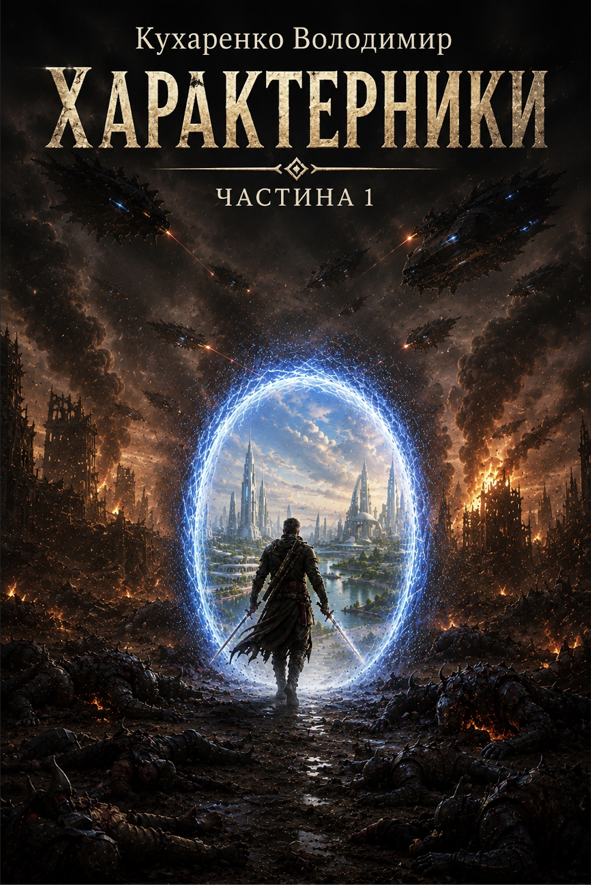
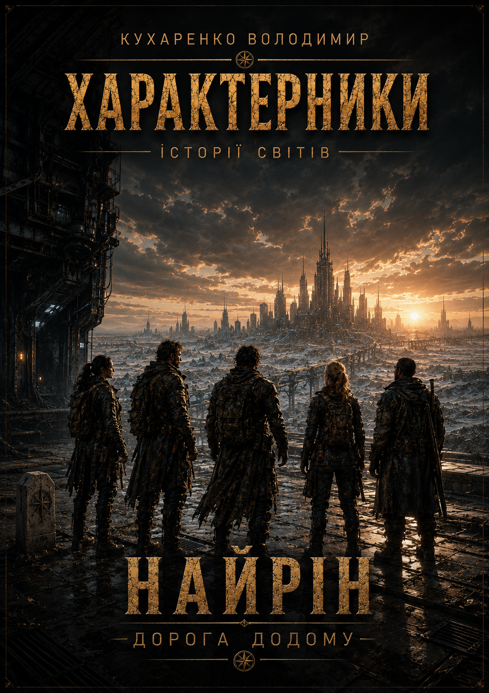
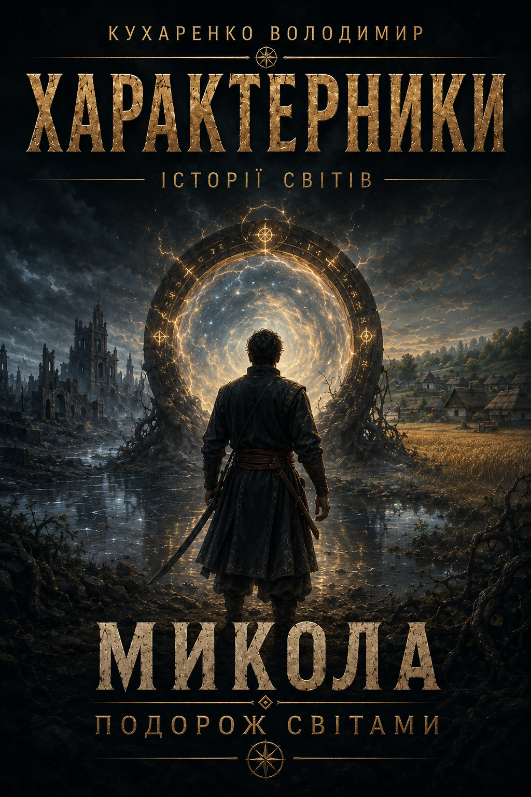
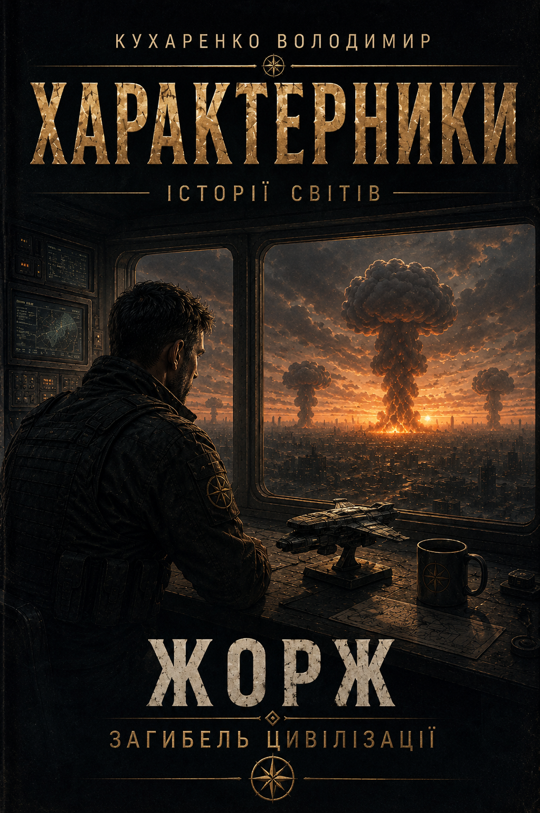

ОСНОВНИЙ РОМАН
Характерники.
Частина 1
Основна історія літературного всесвіту «Характерники».
Статус: у роботі
ЛІТЕРАТУРНИЙ ВСЕСВІТ
Історії різних людей, світів і епох, що поступово складаються в одну картину.

ОСНОВНИЙ РОМАН
Основна історія літературного всесвіту «Характерники».
Статус: у роботі

ІСТОРІЇ СВІТІВ
Дорога додому

ІСТОРІЇ СВІТІВ
Подорож світами

ІСТОРІЇ СВІТІВ
Загибель цивілізації